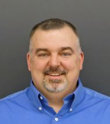

Andrew Tubesing
University of St. Thomas
(651) 962-5437 Tel
Office: FDC 215
Electrical Engineering Laboratory Manager
School of Engineering
2115 Summit Avenue
OSS 100
St. Paul MN 55105
(651) 962-6419 Fax
tubesing@stthomas.edu
Driving directions
ENGR 296 Introductory Topics in Electrical Engineering: A Make/Build/Discover Adventure. [Full details][Flyer]
Taught by Andrew Tubesing, UST EE Lab Manager.
- This course is designed as...
- An introduction to electrical and electronic concepts, including both scientific theory and hands on skills. No experience is necessary, yet those with experience will still learn plenty.
- A chance to 'try on' electrical engineering as a major/minor and understand more about what kind of material you will study as an EE student and the kinds of scientific material you will use in an EE career
- A head start for EE majors, preparing them for ENGR 230 and 240, the first round of EE major classes
- A head start for ME majors to prepare them for ENGR 350, the EE for non-majors course
- A fun way to learn about electricity and electronics while learning real theory, gaining lab skills, and building interesting things. Everything you build in this class you will understand, because you designed it based on your own knowledge developed in this course!
- This course will meet during j-term on M-F from 1000-1200 and 1300-1500. Four of these days will be class/lab, and one day per week will be used for field trips to see electrical engineering in action around town. We will try to make field trips on friday mornings with the goal of being back to campus by early afternoon, although the exact arrangements are yet to be determiined so we may have class on some fridays.
- The basic format will be to spend one of the 2-hr daily session on lecture material, and the other session on lab activities. So, each day will have some theory and some hands-on content.
UST - SOE Links
- UST ENGR Lab Resource Page - Lab Headquarters
- ENGR Lab Employment page - Job descriptions, application, etc.
- EE Lab Documents - Equipment manuals, peripheral user guides, pin-out diagrams, etc.
- How-To Resources - Soldering, using perfboard and breadboards, etc.
- Ordering Parts - Instructions for placing parts orders with ENGR staff.
- EE Lab Safety
External Links
- Some ecommended Multi-meters for use in ENGR labs (ENGR@UST Amazon Store)
- Two other meters that are a great bang for your buck, made by RSR Electronics / Electronix Express (elexp.com). These are very good quality with some nice features, and they measure just as well as (and for some features better than) the brand name options above:
- RSR Model 01DMMS8268 at $35 this is the best value-priced option there is.
- RSR Model 01DMMS8229 at $75 this is a verey good meter with more features than their other model. If you want these extended features, pick this one or the Amprobe 35XP-A at the amazon link above, they're about the same price.
- Recommended vendors for electronic parts
- Other useful websites
- Minnesota Science Olympiad